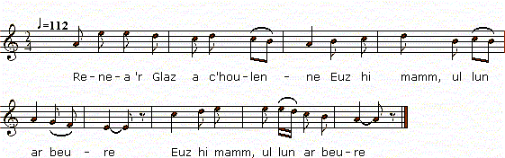

Renea Ar Glaz (Eilved Stumm)
Renée Le Glas (2ème version)
à rapprocher d'"Azénor la Pâle" du "Barzhaz Breizh"
Texte recueilli par François-Marie Luzel:
Publié dans "Gwerzioù Breizh-Izel", tome 1, en 1868

Mélodie
Chantée par Maryvonne Bouillonnec à Tréguier
tirée de "Musiques Bretonnes",
recueil de Maurice Duhamel publié en 1913
Arrangement Christian Souchon (c) 2012
Source: le site de M.Quentel, "Son ha ton" (voir "Liens")
|
VERSION "GWERZIOU BREIZ IZEL" I Renea 'r Glaz a c'houlenne Euz hi mamm, ul lun ar beure : - Petra ' zo newez en ti-man, Ma medi ar beer oc'h ann tan? Ma medi ar beer oc'h ann tan, Ar pot-c'houarn braz, 'nn hini bihan ? - - 'N dra vraz, ma merc'h, eo ho klewet, Hag 'ma warc'hoaz dez 'ho eured ! - - Penaos warc'hoaz de ma eured, Ha na on ket bet dimezet ! - - Pa oac'h 'n ho kwele, kousket mad, C'hui oa dimezet gant ho tad. - - Mar 'ma warc'hoaz de ma eured, Me ha d'am gwele da gousket, 'Wit sevel warc'hoas beure-mad, Ma mamm, da wiska ma dillad ; Ma mamm, ewit em brepari Mont gant Ervoan Gelard d'eureuji. - Renea 'r Glaz a lavare D'hi mates vihan en de se: - Mates vihan, mar am c'haret, Ul lizer wit-on a gassfet ; Ul lizer wit-on a gassfet Da Gerversault, d'am dous Kloarek. - II Ar vates vihan a lare En Kerversault pa arruë : - Demad ha joa holl en ti-ma, Ar C'hloarek iaouank pelec'h 'ma? - - E-medi war he wele klan, Gant keûn d'he dous koant Renean ; Gant keûn d'he dous koant Renean, Mates vihan, konzolet-han. - - Dalet, Kloarek, al lizer-ma, Digant ho tous-koant Renea. - Ar C'hloaregik a lavare, Ebars al lizer pa lenne : - Hervez 'lavar al lizer-ma, Na d'euz ket tri de da vewa ; Hi n'deuz ket tri de da vewann, Me n' 'm euz ket ter heur, a gredann ! Dalet, matezik 'r pez daou-skoed, Wit ar boan oc'h euz kommerret. - III Renea 'r Glaz a lavare, A brennestr hi c'hambr, ann de-se: - Me 'well arru 'r gompagnunes, E-maint 'tremenn koat ann Dizes ; (2) Ervoaon Gelard er penn kentan, Ha ma malloz roann d'ez-han ; Ma malloz a roann d'ez-han, Pa deuas d' glask plac'h er vro-man ; Merc'hed a-walc'h oa 'n he gontre, Hep kaout re-all 'n despet d'ez-he ! - Ervoan Gelard a lavare, 'N ti ar Glaz koz pa arrüe : - Demad ha joa holl en ti-ma, Ma medi ma dous Renea? - - Ema bars ar gambr, uz d'ann ti, Ervoan Gelard, konzolet-hi. - - Na demad d'ec'h, Renea goant ! - - Ha d'ec'h iwe, intaon iaouank ! - - Itron Varia ann Drinded ! Ha wit intaon ma c'hommerret ? - - Wit intaon n'ho kommerrann ket, Met 'benn un tri dez a vefet ! - IV Renea 'r Glaz a lavare, 'Biou Kerversault pa dremene : (3) - Ma lezet da antrenn aman, Wit ma welinn ar map-henan : Wit ma welinn ar map-henan, 'M euz klewet 'zo 'n he wele klan ; 'M euz klewet 'zo 'n he wele klan, Memeuz en he heur diwezan. - - Wit fete na antrefomp ket, Warc'hoas hen grafomp, mar karet. - - Mar na antreomp ket fete, Warc'hoas n'hen grafomp ket iwe..... - E-pad oferenn ann eured, Taoliou ar maro 'zo skoët ; (1) Taoliou ar maro 'zo skoët, Ar c'hloaregik 'zo tremenet ! Renea 'r Glaz a lavare D'ann aotro 'r person, en de-se : - Hastet laret ann ofern-ma, Daro ma c'halon da fata ! - 'Nn aotro 'r Person a lavare Da Renea 'r Glaz en de-se : - Un dra vraz, Renea, ho klewet, Un den-a-feson ho euz bet, 'Zo perc'henn 'nn arc'hant hag ann aour, Gant ho tous kloarek 'vijeac'h paour. - - Se na ra mann da zen a-bed, Ha pa ven gant-han klask ma boed ! - V Renea 'r Glaz a lavare, 'N ti hi mamm-gaer pa arrue: - Roët d'in kador d'azeza, Serviedenn d'em dic'houeza ; - Serviedenn d'em dic'houeza ; Prest eo ma c'halon da ranna ! - Met hi mamm-gaer a lavaras Da Renea 'vel m'hi c'hlewas : - Un dra vraz, Renea, ho klewet, Ha c'hui war 'n inkane douget ! - - Ma vijenn deut gant ma grad-vad, Me a vije deut war ma zroad. - Renea 'r Glaz a lavare Da dut ann eured, ann de-se : - Debret, evet, kompagnunez, Achu eo da berc'henn 'nn dewez ! - (4) Renea 'r Glaz a c'houlenne Digant hi mamm-gaer, en noz-se : - Ma mamm-gaer, d'in-me lavaret Pelec'h iefomp-ni da gousket? - - Gret eo ho kwele 'r gabinet, Lec'h gant netra n' vefet jenet. - Er gabinet p'eo arruet, Diou gador a deuz kommerret; Diou gador a deuz kommerret, Unan d'ez-hi, 'n all d'hi fried : - Ma fried paour, ma veac'h kontant, 'Rafenn brema ma zestamant? - - Gret ann testamant a garfet, Ha pa iafe d' bewar mill-skoed ; Ha pa iafe d'bewar mill skoed, Vel ma larrfet a vezo gret. - - Ma fried paour lavaret d'in, Ped a vewelienn 'zo 'n ho ti ? - - Tric'houec'h pe naontek 'zo 'nn ez-he ; Gant ma mamm a klewet goude. - - Ma fried paour, mar am c'haret, Pep' habit dû d'he a breenfet, Wit ma laro tud ar c'hontre : Kaonerienn 'r vroeg-iaouank 'r re-ze ! - Hi lakad hi fenn war he varlenn, Hag o verwell neuze zoudenn ! Doue d'bardono ann anaon, Medint ho daou war ar varwskaon ! (6) Et int ho daou en ur poullad, Pa n'int bet et 'n ur gwelead ; Medint ho daou er memeuz be, Bennoz Doue war ho ine ! (5) Notes de Luzel: (0) Kanet gant Garandel, lezhañvet "Kompagnon-Dall", Kerarborn, 1847. |
TRADUCTION FRANCAISE (de Luzel) I Renée Le Glaz demandait A sa mère, un lundi matin : - Qu'y a-t-il de nouveau dans cette maison, Que la broche est au feu ? Que la broche est au feu, Ainsi que le grand pot de fer, et le petit? - - Je suis étonnée, ma fille, de vous entendre, Puisque c'est demain le jour de votre noce! - Comment, demain le jour de ma noce, Et moi qui ne suis pas fiancée ! - - Vous étiez dans votre lit, bien endormie, Quand vous avez été fiancée par votre père. - - Si c'est demain le jour de ma noce, Je vais me mettre au lit, pour dormir, Afin de me lever demain de banne heure, Ma mère, pour m'habiller; Ma mère, pour me préparer A accompagner Yves Gelard, pour nous marier. - Renée Le Glaz disait A sa petite servante, ce jour-là : Petite servante, si vous m'aimez, Vous porterez une lettre pour moi; Vous porterez une lettre pour moi A Kerversault, à mon doux Kloarek. - II La petite servante disait En arrivant à Kerversault : Bonjour et joie à tous dans cette maison, Le jeune Kloarek, où est-il? - - Il est malade sur son lit, Du regret de sa douce jolie Renée; Du regret de sa douce jolie Renée, Petite servante, consolez-le. - - Kloarek, prenez cette lettre De votre douce jolie Renée. - Le pauvre Kloarek disait, En lisant la lettre : - D'après ce que dit cette lettre, Elle n'a pas trois jours à vivre; Elle n'a pas trois jours â vivre, Et moi, je n'ai pas trois heures, je pense ! Prenez, petite servante, une pièce de deux écus, Pour la peine que vous avez prise. - III Renée Le Glaz disait, A la fenêtre da sa chambre, ce jour-là : - Je vois venir la compagnie, Ils passent par le bois de Dizes; (2) Yves Gélard est en tète, Et je lui donne ma malédiction; Je lui donne ma malédiction Pour être venu chercher femme dans ce pays; Assez de filles étaient dans sa contrée, Pour ne pas vouloir en avoir d'autres malgré elles! Yves Gélard disait, En arrivant chez le vieux Le Glaz : - Bonjour et joie à tous dans cette maison, Où est ma douce Renée? - - Elle est dans la chambre, au-dessus de la cuisine, Yves Gélard, consolez-la. - - Bonjour à vous, Renée la jolie. - - A vous de même, jeune veuf! - Notre-Dame Marie de la Trinité! Me prenez-vous pour un veuf? - - Je ne vous prends pas pour un veuf, Mais vous le serez dans trois jours! IV Renée Le Glaz disait, En passant auprès de Kerversault : (3) - Laissez-moi entrer ici, Pour que je voie le fils ainé : Pour que je voie le fils ainé, J'ai entendu dire qu'il est malade sur son lit; J'ai entendu dire qu'il est malade sur son lit, Et même à son heure dernière. - - Pour aujourd'hui, nous n'entrerons pas, Nous le ferons demain, si vous voulez. - - Si nous n'entrons pas aujourd'hui, Demain nous ne le ferons pas non plus..... - Pendant la messe de noce, Les coups de la mort ont frappé; (1) Les coups de la mort ont frappé, Le pauvre Kloarec est mort ! Renée Le Glaz disait A monsieur le recteur, ce jour-là : - Hâtez-vous de dire cette messe, Mon coeur est près de défaillir! - Monsieur le recteur disait A Renée Le Glaz, ce jour-là : - Je suis surpris, Renée, de vous entendre, Vous avez eu un honnête homme; Il possède de l'argent et de l'or, Et avec votre doux Kloarec vous seriez pauvre! - - Cela ne regarde personne au monde, Et quand je serais avec lui à chercher mon pain ! - V Renée Le Glaz disait, En arrivant chez sa belle-mère : - Donnez-moi siège pour m'asseoir, Serviette, pour essuyer la sueur; Serviette, pour essuyer la sueur, Mon coeur est près de se briser ! - Mais sa belle-mère répondit A Renée, sitôt qu'elle l'entendit : -- Je suis étonnée, Renée, de vous entendre, Vous qui étiez portée sur un cheval ! - - Si j'étais venue de mon plein gré, Je serais venue à pied ! - Renée Le Glaz disait Aux gens de la noce, ce jour-là: - Mangez, buvez, compagnie, C'en est fini pour la maîtresse de la journée ! (4) Renée Le Glaz demandait A sa belle-mère, cette nuit-là : - Ma belle-mère, dites-moi, Où irons-nous coucher? - - Votre lit est fait dans le cabinet, Là où rien ne vous gênera. - Arrivée dans le cabinet, Elle a pris deux chaises; Elle a pris deux chaises, Une pour elle, l'autre pour son époux : - Mon pauvre époux, si vous étiez content, Je ferais à présent mon testament? - - Faites le testament que vous voudrez, Dût-il aller à quatre mille écus; Et quand il irait à quatre mille écus, Comme vous direz il sera fait. - - Mon pauvre époux, dites-moi, Combien y a-t-il de serviteurs dans votre maison ? - - Il y en a dix-huit ou dix-neuf, Vous l'apprendrez plus tard de ma mère. - - Mon pauvre époux, si vous m'aimez, Vous leur achèterez a chacun un habit noir, Pour que les habitants du pays disent : - Ce sont les porteurs de deuil de la jeune femme ! - Elle mit alors la tête sur ses genoux (à lui). Et mourut presqu'aussitôt !..... Que Dieu pardonne à leurs âmes, Ils sont tous les deux sur les tréteaux funèbres! (6) Ils sont allés tous les deux dans la même fosse, Puisqu'ils n'ont pas été dans le même lit : Ils sont tous les deux dans la même tombe, La bénédiction de Dieu soit sur leurs âmes ! (5) Notes de Luzel: (0) Chanté par Garandel, surnommé Compagnon-l'Aveugle. Keramborgne, 1847. (1) Glas funèbre qu'on sonne dans nos campagnes, au clocher de la commune et à la chapelle la plus voisine de l'habitation où quelqu'un vient de mourir. (2) Une autre version porte "koad ar Varones", bois de la Baronne. (3) Les villages du nom de Kerversault ou Kerverzot, ne sont pas rares en Basse-Bretagne; il s'en trouve, entre autres, dans les communes de Ploubezré et de Quemperven, arrondissement de Lannion. (4) La nouvelle mariée. (5) Voir dans le Barzaz Breiz (p. 242) la pièce qui correspond à celle-ci, sous le titre de : Azénor la pâle. (6) "Tous les deux" doit s'entendre ici de Renée et de son amoureux, Yvon Gélard. |
ENGLISH TRANSLATION I Renée LeGlaz asked Her mother, a Monday morning: - What's afoot in this house? With the spit turning over the fire? Why is the spit over the fire, With the big and the small iron pot? - I wonder, daughter, why you ask! Why, tomorrow is your wedding day! - - How could I marry tomorrow? If I am not even betrothed! - You were in bed, and sound asleep, When your father betrothed you. - If my wedding day is tomorrow I am going to bed and sleep To rise tomorrow at daybreak, Mother, and try on my wedding gown. Mother I want to get ready For my wedding with Yves Gélard. - Renée LeGlaz has said To her little maid that day: - Little maid, if you love me, You would carry this letter, You would carry this letter, To Kerversault's, to my dear clerk. - II The little maid said On arriving at Kerversault's: - Good day and joy to all in this house! The young clerk, where is he? - He lies in bed and he is ill Because of the heartbreak he feels On account of his dear Renée. Little maid, go and cheer him up! - Here, Clerk, is a letter for you It is from your dear Renée. - The young clerk has said While he was reading the letter. - Judging from this letter, it appears That she has no more than three days to live. She has no more than three days to live. I'm afraid I've no more than three hours! Here is a two-crown coin for you, maid, As a reward for the trouble you took. - III Renée LeGlaz has said Sitting at the window in her bedroom, that day: - I see a party coming. They are passing through the Dizes wood; (2) Yves Gélard is leading them My curse be upon him! My curse be upon him Who looked for a wife in these parts! There were enough girls in his own country Without exacting agreement from others. - Yves Gélard has said At Old LeGlaz's when he turned up: - Good day and joy in this premises! Where is my beloved Renée? - She is upstairs, in her bedroom, Yves Gélard, do relieve her gloom. - Good day I wish you, sweet Renée! - Widower, I wish you good day! - By the Trinity and the Holy Virgin! D'you think I am a widower? -I do not say you are now a widower. But you'll be one at three day's notice! IV Renée LeGlaz has said As they they were passing Kerversault's. (3) - Please, let us enter this house. I must see the eldest son. I must see the eldest son, For I heard he's confined to bed. For I heard he's confined to bed: He may die every moment. - We shall not for the time being. Tomorrow, perhaps, if you please. - If we don't visit him today, Tomorrow we shall not either... - During the wedding mass The "beat of the death" was tolled. (1) The "beat of the death" was tolled: The poor clerk had passed away! Renée LeGlaz has said To the reverend vicar that day: - Please, finish this mass presently: I'm sick at heart and near to swoon! - The reverend vicar has said To Renée LeGlas that day: - I wonder much why you say so: An outstanding husband you have. He is wealthy in silver and gold. Your clerk is poor as a church mouse. - That's no concern of anybody's If I have to beg for bread with him! - V Renée LeGlas has said On arriving at her mother-in-law's. - Give me a seat to sit down, And a towel to wipe my sweat, A towel to wipe my sweat off with My heart is near to burst. - But her mother-in-law answered Renée, when she heared her. - I am astonished to hear you say so. For you came riding on a horse! - If I were to go where I liked I'd prefer to come on foot! - Renée LeGlas has said To the wedding party that day: - Drink, and eat, wedding party! The mistress of the day now is retiring. - (4) Renée LeGlaz asked Her mother-in-law that night: - My mother-in-law, please, tell me, Where are we going to sleep? - - Your bed is made in the cabinet Where no one will disturb you. - She repaired to the cabinet And she took two chairs. Two chairs she has taken: One for herself, one for her husband: - My poor husband, with your leave, I'd write my will and testament. - You may write a will if you choose, Bequeath up to four thousand crowns. Even a sum of four thousand crowns Will be shared as you specify. - - My poor husband, tell me how many Servants you have in your household? - Eighteen or nineteen... You'd better ask my mother. - My poor husband, if you liked me, You'd buy a black garment to each of them, So that people might say: "They go into mourning for the young lady." - Then she laid her head on his lap. And presently she was dead... May God grant them pardon: Now they are on funeral trestles, both of them! (6) Both of them lie in the same grave If they didn't sleep in the same bed. Both of them are in the same tomb. God's blessing be upon their souls! (5) Notes by Luzel: (0) Sung by Garandel also known as "Blind-Companion", at Keramborgne in 1847. (1) Knell immediately tolled, in our countryside, by the bell of the chapel that is nearest the dwelling of one who passed away. (2) Another version has "koad ar Varones", "Wood of the baroness". (3) There are galore villages named Kerversault or Kerverzot in Lower-Brittany; for instance, in the parishes Ploubezré and Quemperven, district of Lannion. (4) I.e. the bride. (5) See in the Barzhaz Breizh (p. 242) the piece corresponding to the present song, titled : Azénor the Pale. (6) "Both of them" means here Renée and her lover, Yvon Gélard. |